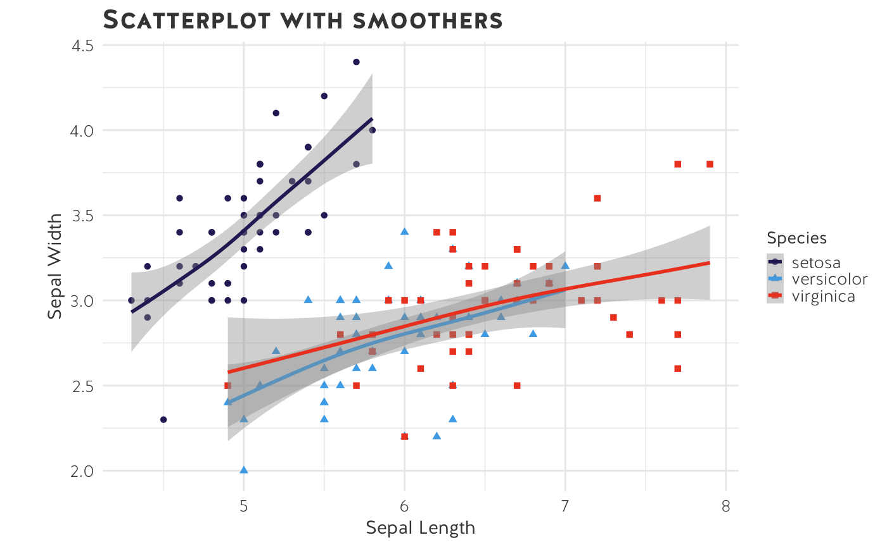

Visual explanation of USSC ggplot2 themes and colour scales
Zoe Meers
2018-12-14
Source:vignettes/ussc-ggthemes.Rmd
ussc-ggthemes.RmdIntroduction
This vignette visually explains how researchers at the USSC can use the Center’s fonts and colours in their research output.
The ussc package comes with several functions that will be useful for quantitative researchers at the Centre. As we are primarily a Tidyverse shop, they are geared towards data visualizations made in the Tidyverse using ggplot2.
The functions are:
Setup
In addition to loading the packages you would otherwise use in your analysis, load the ussc package. In this example, I will load tidyverse as well as ussc.
Scattter plot
The first example uses the standard ussc theme. The font used in the title and caption is Neo Sans Pro. Other text elements on the graph default to Univers (see axes and legend). In this scatterplot, I have defined the colour using scale_colour_ussc(). I call the main colour palette which is an interpolation scale ranging from the dark blue colour scheme to red. In this example, the colour scale has been reversed from red to dark blue.
ggplot(iris, aes(Sepal.Width, Sepal.Length, colour = Species)) +
geom_point(size = 4, alpha=0.4) +
theme_ussc() +
labs(title="Univers Header", x="Univers Font: Sepal Width", y="Univers Font: Sepal Length", caption = "The data is from the Iris R package and is an example.") +
scale_colour_ussc("main", reverse=TRUE) 
Dark scatter plot
ggplot(iris, aes(Sepal.Width, Sepal.Length, colour = Species)) +
geom_point(size = 4, alpha=0.4) +
theme_ussc_dark() +
labs(title="Univers Header",
x="Univers Font: Sepal Width",
y="Univers Font: Sepal Length",
caption = "The data is from the Iris R package and is an example.") +
scale_colour_ussc("blue", reverse=TRUE)
Bar chart
Researchers can specify the colour of a geom object by passing the ussc_colours() function inside the object’s parentheses.
ggplot(data=iris, aes(x=Species, fill=Species)) +
geom_bar(fill=ussc_colours("light blue")) +
labs(x = "Species",
y = "Count",
title = "Bar plot of Sepal Length") +
theme_ussc() 
Scatter plot
This chart uses the light Univers font and the main colour palette.
ggplot(iris, aes(Sepal.Width, Sepal.Length, colour = Species)) +
geom_point(size = 4) +
theme_ussc_univers_light() +
labs(title="Univers Header",
x="Univers Font: Sepal Width",
y="Univers Font: Sepal Length",
caption = "The data is from the Iris R package and is an example.") +
scale_colour_ussc("main") 
B/W scatter plot
This chart uses the light Neo Sans Pro font and the black and white colour palette. Note that alpha has been set to 70%.
ggplot(iris, aes(Sepal.Width, Sepal.Length, colour = Species)) +
geom_point(size = 4, alpha=0.7) +
theme_ussc_neosanspro_light() +
labs(title = "Neo Sans Pro Header",
x = "NSP Font: Sepal Width",
y = "NSP Font: Sepal Length",
caption = "The data is from the Iris R package and is an example.") +
scale_colour_ussc("grey")
Faceted graph
Here is an example of a faceted graph.
ggplot(mtcars, aes(mpg, hp, colour=mpg)) +
geom_point() +
facet_grid(cyl~gear) +
theme_ussc() +
scale_fill_ussc("main", discrete=TRUE) + labs(title='A facet_grid example')
GAM
ggplot(data=iris, aes(x=Sepal.Length, y=Sepal.Width, color=Species)) +
geom_point(aes(shape=Species), size=1.5) +
xlab("Sepal Length") +
ylab("Sepal Width") +
ggtitle("Scatterplot with smoothers") +
scale_colour_ussc("main") +
theme_ussc() +
geom_smooth(method="gam", formula= y~s(x, bs="cs"))